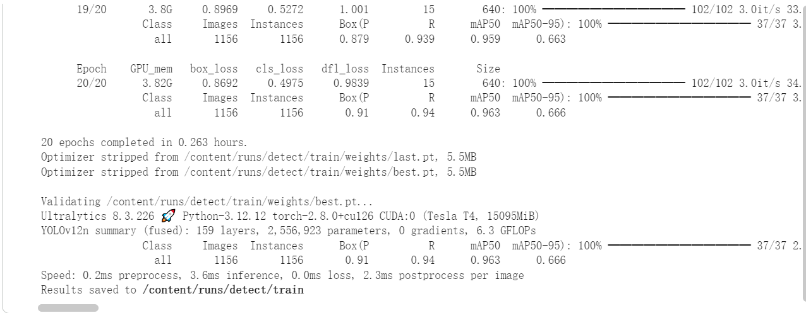
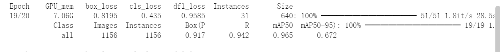
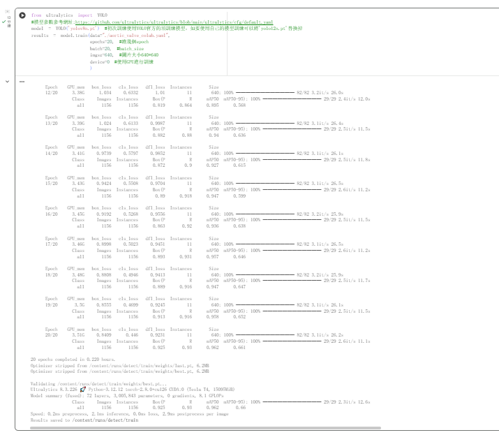
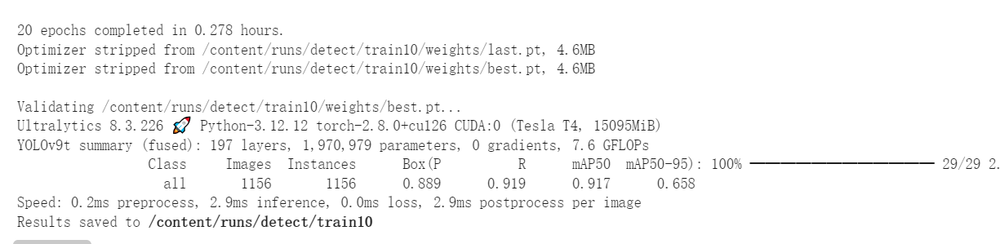
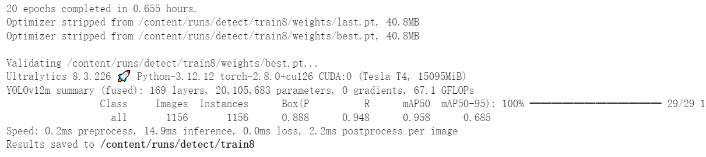

| 總分 | 完成後打勾 | 配分 | 分項描述 |
|---|---|---|---|
| 4 | Simple baseline - 將 Colab 中所有步驟執行完畢，完成訓練 baseline 模型(YOLOv12)。 訓練完成後，Colab 產生權重檔(best.pt)，檔案5.3MB。 將上述 baseline 模型權重檔，下載至你的本地端 local 電腦。 | ||
| 4 | Medium baseline - 調整訓練/驗證筆數(總數須為50筆)、 Epochs 或其他訓練參數，得到比 Simple baseline(mAP50 = 0.963) 更高的分數。 更改參數參考網址 : https://github.com/ultralytics/ultralytics/blob/main/ultralytics/cfg/default.yaml 將 Colab 上面訓練出來的 mAP50 分數結果(如下圖)，截圖放到作品集網站，並簡單說明如何得到更高的分數。 | ||
| 2 | Strong baseline - 使用不同版本、大小的YOLO模型或其他物件偵測模型(例如: YOLOv12m、YOLOv11s、YOLOv9t...等)，進行訓練，並繳交 Colab 程式碼連結到你的 HW05 作品集。 比賽可以成功訓練出最多的模型數量 成功訓練出最多的模型數量，名列全班前20名。(1pt) 成功訓練出最多的模型數量，名列全班前10名。(1pt) 並將成功訓練出的畫面截圖並放到作品集網站，並說明使用了哪些模型。 | ||
| -10 | 沒有寫100字心得 |




